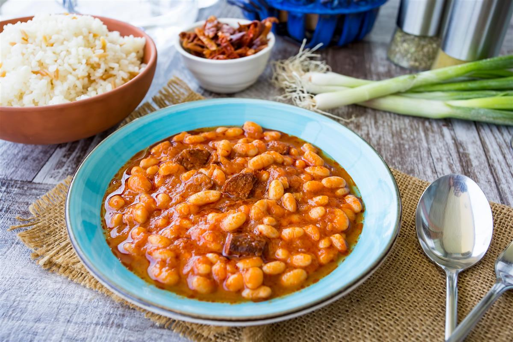

Grah sa kobasom

Opis
Najčešće se radi s kranjskim kobasicama, ali možete staviti bilo koje dimljene kobasice za kuhanje koje nađete u hladnjaku. Ako redovno doma kuhate grah, stavite taj koji ste sami skuhali umjesto ovog iz konzerve.
- 3 žlice maslinovog ulja
- 50 gdimljenog hamburgera (špeka)
- 1 crveni luk
- 1 komorač
- 1 svežanjstabljika celera
- 3 kobasice za kuhanje (kranjske, češnjovke)
- sol
- 2 žlice koncentrata rajčice
- 1 žlicadimljene slatke crvene paprike
- pola žličice mljevenog korijandera
- 1 lovorov list
- 2l vode
- 2 velike konzerve bijelog graha (920 g)
- Dimljeni hamburger, crveni luk, komorač i stabljike celera narežite na kockice, a kobasice na deblje kolutove.
- Na ulju dinstajte dimljeni hamburger da posmeđi sa svih strana, dodajte luk, komorač i celer, posolite.
Dinstajte da svi sastojci omekšaju.
Dodajte narezane kobasice, koncentrat rajčice, začine i vodu pa kuhajte pola sata u polupoklopljenom loncu.
Dodajte ocijeđeni grah i kuhajte još desetak minuta.
- edite dok je još vruće uz svježi domaći kruh.